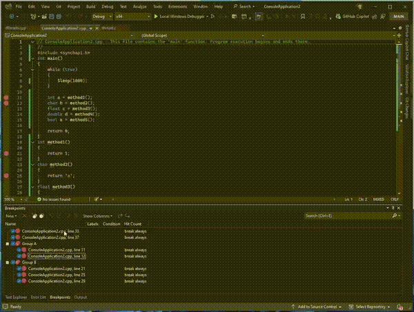

Visual Studio has introduced a convenient new feature that enhances breakpoint management. Developers can now export and import breakpoint groups, allowing for efficient debugging across multiple projects or environments.
Key Features:
- Export of Breakpoint Groups: Easily export entire groups of breakpoints, complete with all configurations, to reuse across different projects.
- Import Breakpoint Groups: Quickly import previously saved breakpoint groups to maintain a consistent debugging setup in new projects.
- Seamless Transition: Avoid the hassle of manually recreating breakpoints by simply importing saved configurations.
- Cross-Environment Compatibility: Ensure a consistent debugging experience across various development environments.
Example of Usage:
